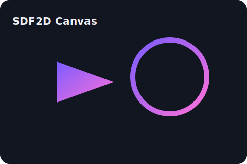

Effortless 2D animation
Natural brush engine, smart inbetweens, one-click rigging, and onion skin. Hybrid vector + raster on the same timeline. Fast, local, privacy-friendly.

North star
- Sketch to final with smart helpers.
- Hybrid vector + raster timeline.
- GPU canvas; on-device ML.
- Free at launch; clean UX.
MVP
- Raster & vector layers, brush/eraser/fill/transform.
- Onion skin controls; timeline with keys, holds, FPS.
- Auto-inbetween (vector path, raster mesh warp).
- Basic rigging: bones/IK; mesh deformers.
- Import PNG/JPG/SVG/PSD/WAV. Export PNG/MP4/GIF/SVG.
Docs
- Install Qt 6 and CMake.
- Unzip the starter and build.
- Launch SDF2D, draw on the canvas, export PNGs.
Roadmap
12-week plan: core, canvas/tools, tween/rig, FX/camera, packaging, docs + beta.